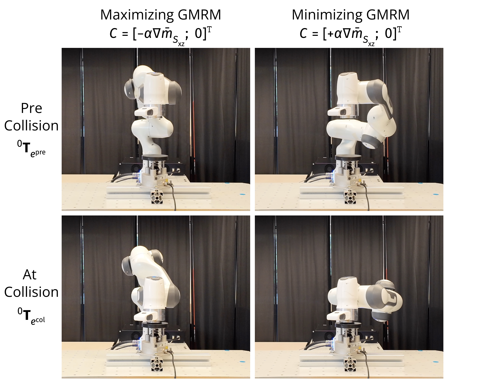
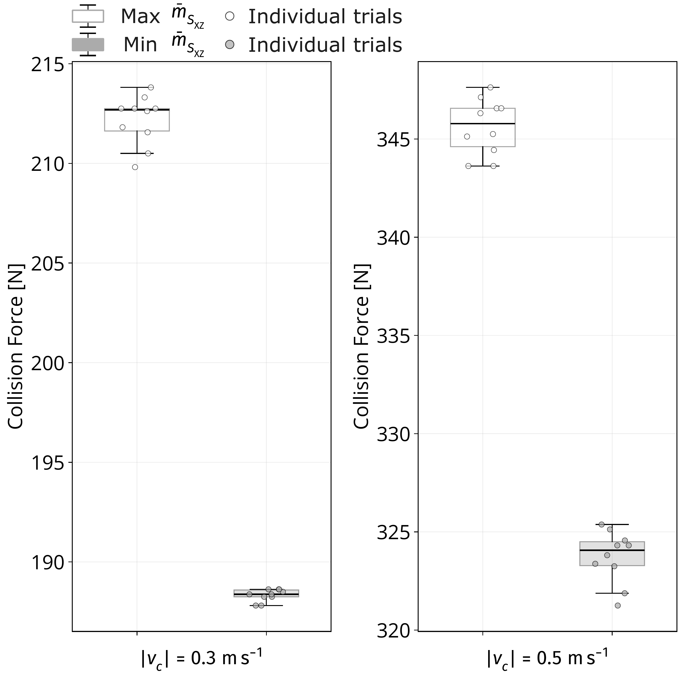

“Generalized Mean Reflected Mass for Subspace-Aware Robot Motion and Impact Evaluation”
Anonymous RA-L supplementary materials — code, videos, and additional results.
Contents
Demonstrations
Supplementary videos for Experiment 3: Motion Control and Impact Evaluation.
Each video shows the arm impacting the Pilz Robot Measurement System (PRMS) from a metric-optimal pre-collision configuration. The configuration is computed offline by the QP controller; in these clips a motion planner moves the arm to it so that all trials share a common timeline. (The online QP-driven motion is shown under Code.) Maximizing the X–Z plane GMRM $\bar{m}^{(2)}_{s,\text{XZ}}$ produces higher collision forces than minimizing it.


Controller & Code
These clips show the QP controller running online, resolving the arm’s redundancy to increase or decrease the reflected mass while tracking the end-effector. The control loop runs at a fixed time step of $\Delta t = 0.025~\mathrm{s}$ (40 Hz).
We incorporate the reflected-mass metric into a QP controller as a secondary objective (Nocedal & Wright, 2006; Haviland & Corke, 2021):
where
with:
- $\mathbf{x} = (\dot{\mathbf{q}}, \boldsymbol{\delta})$ — the decision variable: joint velocities and a slack vector $\boldsymbol{\delta} \in \mathbb{R}^{6}$ that preserves feasibility while tracking the desired twist $\boldsymbol{\nu}^{*}$;
- $\lambda_q,\ \lambda_\delta$ — weights on joint velocity and slack;
- $\mathcal{C}$ — carries the reflected-mass gradient $\nabla \mathrm{m}(\mathbf{q})$; the sign $\pm\alpha$ sets whether the metric is increased or decreased, which resolves the arm’s redundancy;
- $\mathcal{X}^{\pm}$ — the joint-velocity and slack limits.
import numpy as np
import qpsolvers as qp
import roboticstoolbox as rtb
import spatialgeometry as sg
import swift
QP_SOLVER = "quadprog" if "quadprog" in qp.available_solvers else "osqp"
def step_robot(robot: rtb.ERobot, T_b: np.ndarray) -> tuple[bool, np.ndarray]:
alpha = 0.5
beta = 2.0
slack = 10.0
arrival_eps = 0.02
T_a = robot.fkine(robot.q).A
eTep = np.linalg.inv(T_a) @ T_b
et = max(float(np.sum(np.abs(eTep[:3, 3]))), 1e-6)
Q = np.eye(robot.n + 6)
Q[: robot.n, : robot.n] *= 0.01
Q[robot.n :, robot.n :] *= 1.0 / et
v, _ = rtb.p_servo(T_a, T_b, beta)
Aeq = np.c_[robot.jacobe(robot.q), np.eye(6)]
beq = v.reshape(6)
c = np.zeros(robot.n + 6)
c[: robot.n] = alpha * gmrm_xz_grad(robot, robot.q)
lb = -np.r_[robot.qdlim[: robot.n], slack * np.ones(6)]
ub = np.r_[robot.qdlim[: robot.n], slack * np.ones(6)]
x = qp.solve_qp(Q, c, A=Aeq, b=beq, lb=lb, ub=ub, solver=QP_SOLVER)
if x is None:
return False, np.zeros(robot.n)
qd = x[: robot.n]
print(f"et={et:.4f}, gmrm_xz={gmrm_xz(robot, robot.q):.4f}")
return et < arrival_eps, qd
env = swift.Swift()
env.launch(realtime=True)
ax_goal = sg.Axes(0.1)
env.add(ax_goal)
panda = rtb.models.URDF.Panda()
panda.q = panda.qr
env.add(panda)
T_B = panda.fkine(panda.q).A
T_B[:3, 3] += np.array([0.3, 0.0, -0.20])
ax_goal.T = T_B
env.set_camera_pose([2.2, 2.0, 1.4], [0.4, 0.0, 0.4])
env.step()
dt = 0.025
for _ in range(2000):
arrived, panda.qd = step_robot(panda, T_B)
env.step(dt)
if arrived:
break
env.hold()Getting Started
Install uv, then reproduce the demo from the code repository:
git clone <anonymous-code-repo-url>
cd gmrm-code
uv sync --locked
Then run the controller demo:
uv run python main.py
This page will be updated with final links and details upon acceptance.